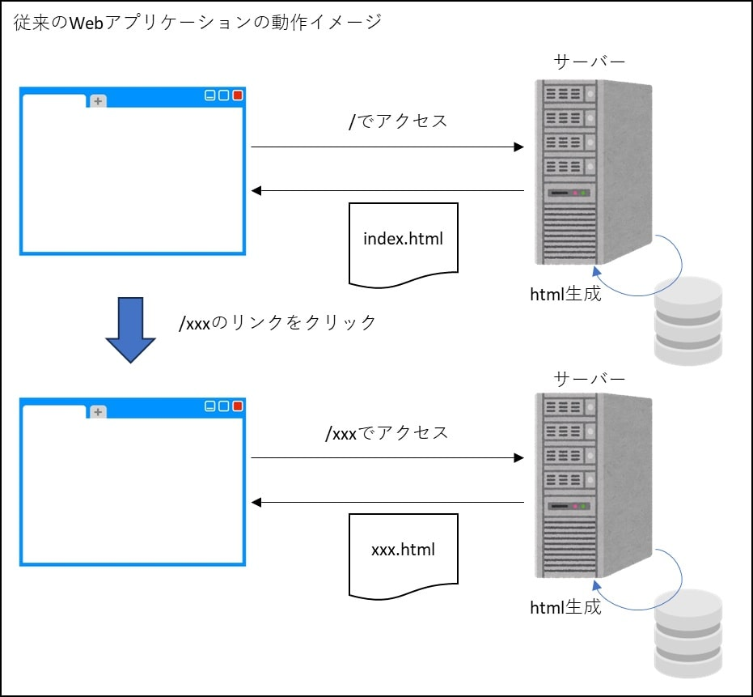
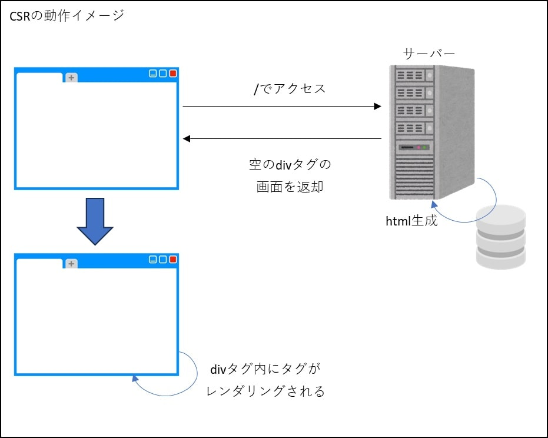
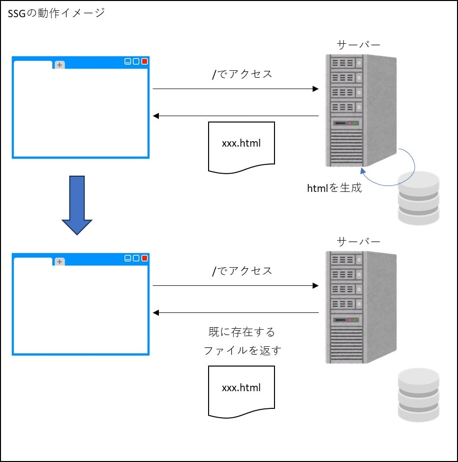
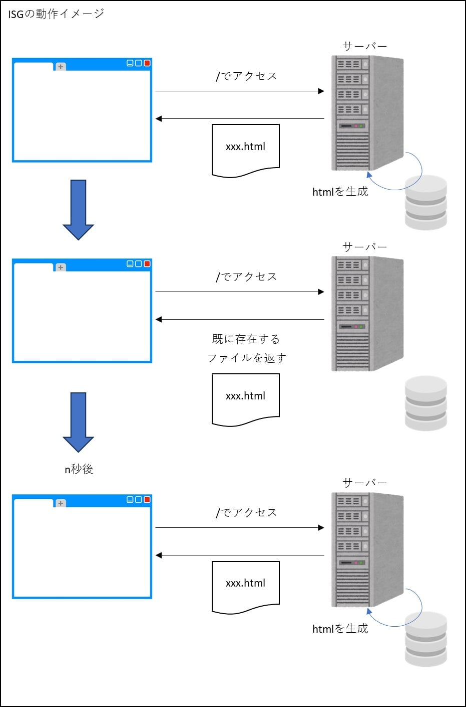
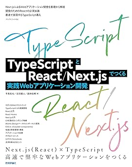

SPA(Single Page Application)
SPA(Single Page Application)
SPA(Single Page Application)は従来のWebアプリケーションとは異なる手法でWebページのレンダリング（データから画像や映像を作ること）を行います。
下図は従来のレンダリング手法。サーバーサイドでレンダリングしてhtmlを生成し、クライアントに返却するという手法です。
htmlを受け取ったクライアントはそのたびにヘッダやフッダを含めて全て更新する方式をとっていました。

一方、下図がSPAのレンダリングです。SPAでは、最初にHTMLやCSS、JavaScriptを受け取った後は必要なデータだけをサーバに要求し差分を表示する方式で構築されます。
下図のように、ページをHTTPで最初にロードしたら、あとは手元のデータを処理するだけでインターフェースが構成されます。必要なデータはサーバーから非同期的にJSONデータとして受け取ることで、通信量を最小限に抑えることも可能です。
この新しい形式のWebアプリケーションであるSPAをサポートするフレームワークとして、React, Vue.js, Angular, Svelteなどがあります。
| フレームワーク | 特徴 |
|---|---|
| React （リアクト） |
Meta社（旧Facebook社）主導のフレームワーク（厳密にはフレームワークではなくライブラリ）。UIデザインの知識がなくても最先端のフロントエンドが作れるスマホアプリにも拡張できる。 仮想DOM(※)を介してDOMを更新。 |
| Vue.js （ヴュー・ジェイエス） |
シンプルなフレームワークで使いやすく、学習コストが低い。 大規模開発には向かない（と書いているサイトをよく見かける）。 仮想DOMを介してDOMを更新。 |
| Angular （アンギュラー） |
Google主導のフレームワーク。動作端末を考慮する必要がなく、汎用性が高い機能が多いため大規模開発に向いている。 仮想DOMに似たincremental-domを使用。 |
| Svelte （スヴェルト） |
実行時のファイルサイズが小さいため、高いパフォーマンスが出る。コードの記述量が少ない、コンパイル時に値が変化する可能性を把握しているため、仮想DOMを使用せず効率的に直接DOMを更新することができる。 |
※仮想DOM：DOMの軽量版みたいなもの。ユーザーのアクションに応じて仮想DOMを更新し、差分だけを実際のDOMに適用する。
フロントエンドフレームワークの利用順位

※画像はこちらから抜粋
ここではReactとVue.js、さらに、Reactをベースに開発されたフレームワークのNext.jsと、Vue.jsをベースに開発されたフレームワークのNuxtに注目していきます。
React, VueはUI構築に特化したJavaScriptフレームワークですが、それにサーバー側の機能を持たせたのがNext.js, Nuxtです。Next.js, Nuxtを使うことで単体でWebアプリケーションを構築することができるようになります。また、レンダリングの手法も、クライアントだけでなくサーバーサイドでのレンダリングや、それらを組み合わせることもできるようになります。
以下が、各フレームワークで選択できるレンダリング手法です。
Next.js, Nuxt3共に、ページ毎にレンダリングモードの選択が可能になっています。
【Next, Nuxt】SSR(Server-Side Rendering)
JavaやPHPなどのいわゆるサーバーサイドWebアプリケーションと同じ。
サーバー側でレンダリングが行われ、生成されたHTMLデータが送信される。ブラウザは、単に送信されたHTMLデータを表示するだけ。
これがSSR(Server-Side Rendering)

【Next, Nuxt】CSR(Client-Side Rendering)
クライアント側でレンダリングの全てを行い、実際に表示に必要な画面を用意する仕組みがCSR(Client-Side Rendering)。
全ての画面がCSRで構成されたアプリケーションのことをSPA(Single Page Application)という。

【Nuxt】Universal Rendering
Nuxtのデフォルト。
アプリのユーザーと相互のやり取りが必要な処理など、どうしてもクライアントサイドで動作しないと成り立たない処理内容に関しては、その処理をサーバーサイドで行わず、JavaScriptコードをブラウザに返すことで、ブラウザ上でも動作させるように自動的に制御する仕組み。
このSSRとCSRのいいとこ取りがユニバーサルレンダリング(Universal Rendering)。

【Next, Nuxt】SSG(Static Site Generation)
初回アクセス時は対応するhtmlファイルをサーバ側で生成し、ブラウザに返します。次にアクセスしてきた場合は、すでに生成されたhtmlファイルを返却します。
一度生成したファイルを何らかの方法で削除したり、強制的に再生成しない限りは、永遠に同じ内容のファイルが返されます。
そのため、例えば現在時刻を表示するようにしていたとしても、htmlファイルが生成された時刻で固定され、何回リロードしても表示時刻は変化しません。
これを静的サイトジェネレーション(Static Site Generation)と言います。
NuxtではこのSSGは現在問題を抱えている状態です。

【Nuxt】ISG(Incremental Static Generation)
SSG(Static Site Generation)とほぼ同じですが、n秒後（nはアプリケーションで指定）にアクセスすると再度サーバ側でhtmlファイルを生成し、それがクライアントに返却されます。
これをインクリメンタル静的ジェネレーション(Incremental Static Generation)と言います。

【Next】ISR(Incremental Static Regeneration)
ISG(Incremental Static Generation)との違いが分からない。
【Next】On Demand ISR(On Demand Incremental Static Regeneration)
ISR(Incremental Static Regeneration)柔軟性をもたせたような機能。
ISRの場合、↑でやっていたようにrevalidateで指定した時間がたたないとページ更新されませんが、ISRの場合は任意のタイミングで更新が可能です。
例えばHeadless CMSのコンテンツ更新時やショッピングサイトのメタデータが変更されたときなどに有用です。
関連技術詳細
以下がReact/Next.jsとVue.js/Nuxtの詳細です。
触ってみた感想
React/Next.jsとVue.js/Nuxtの両方を触ってみた感想ですが、React/Next.jsは自由度が高い（.jsxの特徴かもしれない）。
一つの関数の中にビジネスロジックとhtmlの生成処理を（良くも悪くも）書けてしまうので、メンテナンス性の悪いコードをうっかり書いてしまいがちに感じました。
利用者が多いだけあって、困った時もググれば解決できることが多かったように思いました。
一方、Vue.js/Nuxtは、SFCと言う仕組みを使う以上、ロジックとテンプレート(UI)を分けて書く事を強制されるので、この仕組みに収まる範囲であればメンテナンスの高いコードになりやすいように感じました。
ただし、これは感覚的な話であまり根拠はないですが、システムの規模が大きくなり複雑性が増した場合でもこのSFCの仕組みに収めることができるのかという点は疑問で、もし収まらなかった場合は一気に破綻してしまう恐れがあるように思いました。
また、Vue/Nuxt は React/Next.js と比べると利用率が低いということと、Nuxt2と3の記事が混在している状態なので困ったときに答えに辿り着きづらいように感じました。
参考書籍

React.js&Next.js超入門 第2版- 
TypeScriptとReact/Next.jsでつくる実践Webアプリケーション開発 
Vue 3 フロントエンド開発の教科書
Nuxt 3 フロントエンド開発の教科書
Vue.js入門 基礎から実践アプリケーション開発まで
参考サイト
- MESCIUS SPAの基本と3大JavaScriptフレームワーク（React、Angular、Vue.js）の最新動向 ～2023年版～
- Publickey 「State of JavaScript 2022」公開。利用率1位のフロントエンドライブラリはReact、レンダリングはNext.js、テストはJestなど、4万人のエンジニアが回答
- RELACE MAGAZINE SPA開発とは？メリットや主要なフレームワークを紹介します
- Virtual DOM（仮想DOM）
- DevelopersIO Next.jsのいろいろなレンダリング方法を確認する
- TECH MANIA Next.jsとは【入門】Reactとの違い、できること、メリット
- teamlab-frontend SSR, CSR, SSG, ISG, ISRの違いと使い分け方。それぞれNext.jsでTodoアプリ作ってみた。
- 豆蔵デベロッパーサイト Nuxt3で導入されたハイブリッドレンダリングとNuxt版ISG/ISRを試してみる
- TECH MANIA Nuxt.jsとは？Vue.jsとの違いやできること、メリットを解説
- 転職GUIDE Nuxt.jsとは、Vue.jsを効果的に使うためのフレームワーク！導入のメリットは？【入門編】
- dehamagazine Vue.jsとNuxt.jsの違いは？徹底解説
- Vue.jsとは？他フレームワークとの違いやできることをわかりやすく解説
- すな.dev Svelteの差分検知方法
- Subterranean Flower Svelteで始める頑張らないフロントエンド生活 前編
- Subterranean Flower Svelteで始める頑張らないフロントエンド生活 後編
- Zenn Angularの新しいレンダリングエンジンで採用された "incremental-dom" とは何なのか